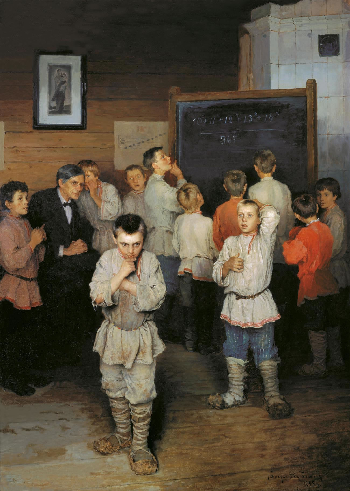

About us | Past Seminars | Conference
The Adequate Institute of Mediocre and Outstanding Mathematics is a centre for the mathematical arts in the heart of Toronto. We are an informal meeting place for young (and young at heart) mathematicians from around the world.
AdIMOM was born in April 2015 in the lovely Little Italy neighborhood of Toronto. It then drifted south, a kilometer or so, and resided on the idylic Adelaide Street West for about two years. Since August 2017 it is located at the quaint Bloor West Village, a serene thirty four minutes walk north-west of the University of Toronto's downtown campus - with Koreatown right around the corner.
The homemade seminar began as an informal meeting of graduate students in front of a whiteboard in a friendly environment. Since then, we grew into a house of seminars from young mathematicians from at least seventeen institutions from five different countries. The homemade seminar sets no time limits and encourages diversity. We have had talks in many different areas of mathematics and the duration ranges from fourty five minutes to four hours, with lots of tea, wine and the enthusiasm that we all share.
If you want to receive updates and abstracts for the upcoming talks, send us an email at homemadeseminar[at]gmail[dot]com and we will add you to the mailing list. You can also subscribe to our calendar. Our precise address, and other secrets, will be revealed to members of this mailing list.